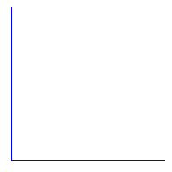

Overview
docxtools is a small set of helper functions for using R Markdown to create documents in docx format, especially documents for use in a classroom or workshop setting. These are particularly useful when one tries to do one’s own work reproducibly but has collaborators who work with Office software exclusively.
-
format_engr()to apply engineering format to numbers -
put_gap()to create white space in a document -
put_axes()to place unlabeled axes in a document
Usage
The density data set is part of the package.
library(docxtools)
data("density")
density
#> date trial T_K p_Pa R density
#> 1 2018-06-12 a 294.05 101100 287 1.197976
#> 2 2018-06-13 b 294.15 101000 287 1.196384
#> 3 2018-06-14 c 294.65 101100 287 1.195536
#> 4 2018-06-15 d 293.35 101000 287 1.199647
#> 5 2018-06-16 e 293.85 101100 287 1.198791format_engr() applies engineering notation to numeric variables, assigns significant digits, and adjusts for ambiguous trailing zeros.
For printing the table, I suggest using knitr::kable(). (Note: The table can be seen correctly rendered at the package website.) docxtools < 0.1.4 used the align_pander() function that is now deprecated and soon to be defunct.
| date | trial | T_K | p_Pa | R | density |
|---|---|---|---|---|---|
| 2018-06-12 | a | \(294.05\) | \({101.1}\times 10^{3}\) | \(287\) | \(1.198\) |
| 2018-06-13 | b | \(294.15\) | \({101.0}\times 10^{3}\) | \(287\) | \(1.196\) |
| 2018-06-14 | c | \(294.65\) | \({101.1}\times 10^{3}\) | \(287\) | \(1.196\) |
| 2018-06-15 | d | \(293.35\) | \({101.0}\times 10^{3}\) | \(287\) | \(1.200\) |
| 2018-06-16 | e | \(293.85\) | \({101.1}\times 10^{3}\) | \(287\) | \(1.199\) |
Using put_gap() with knitr and R markdown, the gap height is specified in the R code-chunk header.
```{r fig.height = 0.75}
# a gap with a border
put_gap(col = "gray", fill = NULL)
```
For put_axes() with knitr and R markdown, the axis height is specified in the R code-chunk header.
```{r fig.height = 2}
# first quadrant axes
put_axes(1, col = "blue", size = 0.5)
```